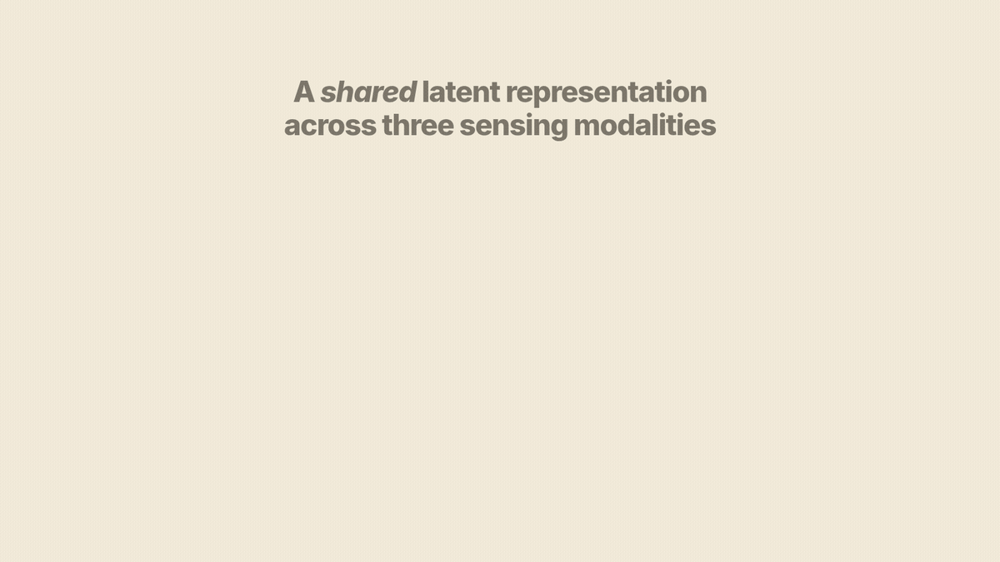
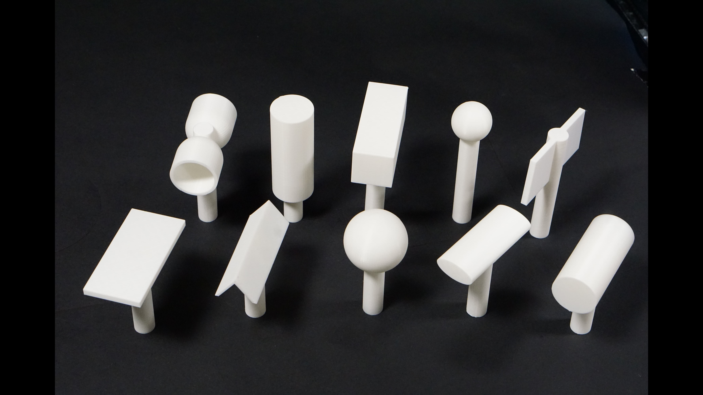
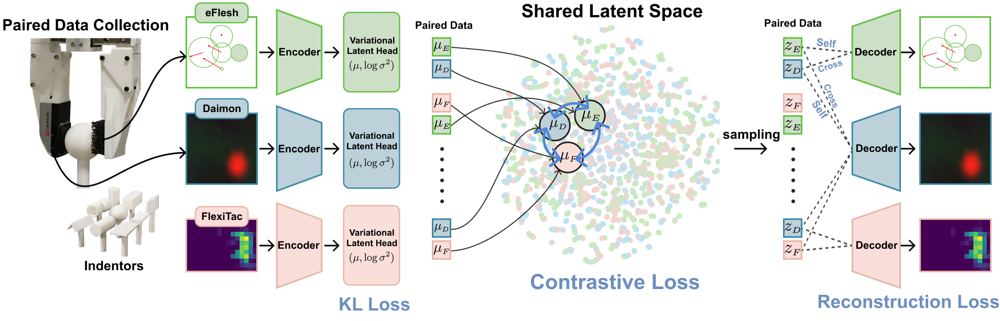

Sensor-Agnostic Touch
Tactile sensors provide critical information for contact-rich manipulation, yet tactile representations and policies remain tightly coupled to each specific sensor, limiting transferability across robots and hardware platforms. We propose TACT X, a framework for learning a transferable tactile representation across sensors spanning three fundamentally different transduction modalities: resistive, magnetic, and vision-based. TACT X maps heterogeneous tactile observations into a shared latent space through modality-specific encoders trained on paired contact data. Such paired interactions provide a natural alignment signal across modalities, and the encoders are jointly trained across all sensor pairs, inducing a consistent latent space for all sensor types. Across multiple manipulation tasks, TACT X improves average zero-shot cross-sensor policy success from 27.5% for vision-only transfer to 45.9%.

Paired Contacts Across Heterogeneous Sensors
TACT X trains from simultaneous paired contact observations. Two tactile sensors are mounted on opposing fingers of a parallel-jaw gripper and record the same physical contact event through different sensing mechanisms.
Pairwise datasets connect Daimon, eFlesh, and FlexiTac. Left/right sensor swaps reduce mounting bias, and 10 3D-printed objects provide point, edge, and area contact geometries for alignment.

Pairwise Training, One Shared Latent
Each sensor has its own encoder and decoder. Encoders map native tactile observations into a shared posterior over a 16-D latent space, while decoders reconstruct each modality from that latent.
TACT X combines contrastive alignment with self- and cross-reconstruction. Minibatches draw balanced samples from every sensor-pair dataset, inducing a globally consistent tactile space from pairwise supervision alone.

Zero-Shot Cross-Sensor Policy Transfer
TACT X is evaluated on four contact-rich manipulation tasks, with an additional out-of-distribution pick-and-place setting that changes object color while preserving geometry.
Shared Tactile Representations Improves Transfer
TACT X achieves the strongest transfer on most task and sensor-pair combinations. The largest gains appear in contact-rich settings such as board wiping and object reorientation, where contact geometry matters beyond binary touch.
| Method | Source | Deploy | P&P | P&P (OOD) | Insertion | Wiping | Reorient |
|---|---|---|---|---|---|---|---|
| Vision Transfer |
Daimon | eFlesh | 5.3 ± 0.9 | 1.7 ± 0.9 | 2.7 ± 0.5 | 3.0 ± 0.0 | 0.3 ± 0.5 |
| FlexiTac | 5.3 ± 0.5 | 1.3 ± 0.5 | 1.3 ± 0.9 | 1.3 ± 0.9 | 0.7 ± 0.9 | ||
| eFlesh | Daimon | 7.7 ± 0.5 | 0.0 ± 0.0 | 3.7 ± 0.5 | 0.0 ± 0.0 | 7.0 ± 0.0 | |
| FlexiTac | 1.3 ± 0.5 | 0.7 ± 0.5 | 0.3 ± 0.5 | 0.3 ± 0.5 | 1.3 ± 0.5 | ||
| FlexiTac | Daimon | 7.0 ± 0.8 | 6.0 ± 0.0 | 3.3 ± 0.5 | 0.7 ± 0.5 | 7.3 ± 0.9 | |
| eFlesh | 6.7 ± 0.5 | 1.0 ± 0.0 | 5.0 ± 0.0 | 0.3 ± 0.5 | 0.0 ± 0.0 | ||
| Binary Contact Transfer |
Daimon | eFlesh | 4.0 ± 0.0 | 1.3 ± 0.9 | 2.7 ± 2.1 | 2.0 ± 2.8 | 1.7 ± 1.7 |
| FlexiTac | 3.3 ± 1.2 | 2.7 ± 0.5 | 2.0 ± 0.8 | 2.0 ± 1.4 | 4.0 ± 1.6 | ||
| eFlesh | Daimon | 3.3 ± 0.9 | 0.0 ± 0.0 | 0.3 ± 0.5 | 1.0 ± 1.4 | 2.3 ± 2.1 | |
| FlexiTac | 4.0 ± 1.6 | 1.3 ± 1.2 | 0.7 ± 0.9 | 0.3 ± 0.5 | 6.0 ± 2.2 | ||
| FlexiTac | Daimon | 3.3 ± 1.7 | 2.7 ± 1.7 | 6.7 ± 0.5 | 1.3 ± 1.9 | 7.3 ± 2.4 | |
| eFlesh | 1.0 ± 0.8 | 2.7 ± 1.9 | 0.3 ± 0.5 | 1.0 ± 0.8 | 2.7 ± 0.9 | ||
| TactX Transfer (Ours) |
Daimon | eFlesh | 8.3 ± 0.5 | 1.0 ± 0.0 | 4.0 ± 0.8 | 4.0 ± 0.0 | 3.7 ± 0.9 |
| FlexiTac | 5.3 ± 1.2 | 2.0 ± 0.8 | 1.3 ± 1.9 | 0.3 ± 0.5 | 6.7 ± 0.9 | ||
| eFlesh | Daimon | 9.0 ± 1.4 | 0.7 ± 0.5 | 6.0 ± 1.6 | 6.0 ± 0.8 | 5.0 ± 1.4 | |
| FlexiTac | 1.3 ± 0.9 | 0.0 ± 0.0 | 3.7 ± 1.2 | 1.3 ± 0.5 | 5.0 ± 0.8 | ||
| FlexiTac | Daimon | 8.0 ± 1.4 | 8.3 ± 1.2 | 8.3 ± 0.9 | 6.3 ± 0.9 | 7.7 ± 1.2 | |
| eFlesh | 6.7 ± 0.9 | 3.0 ± 0.8 | 4.7 ± 0.5 | 5.7 ± 0.5 | 4.3 ± 0.5 |
Open Resources
Dataset
Paired contact data across Daimon, eFlesh, and FlexiTac with left/right-swapped sensor-pair configurations.
Code
Training and evaluation code for shared tactile representation learning, reconstruction, alignment, and ACT policy transfer.
Checkpoints
TACT X encoder and decoder checkpoints, plus downstream tactile-conditioned policy checkpoints.
TACT X
TACT X: Learning Shared Tactile Representations Across Diverse Sensors
Anonymous Authors
CoRL 2026 Submission
16 pages


BibTeX
If you find our work useful, please consider citing the paper as follows:
@misc{Anonymous2026TACTX,
title={TACT X: Learning Shared Tactile Representations Across Diverse Sensors},
author={Anonymous Authors},
booktitle={Conference on Robot Learning (Submission)},
year={2026}
}